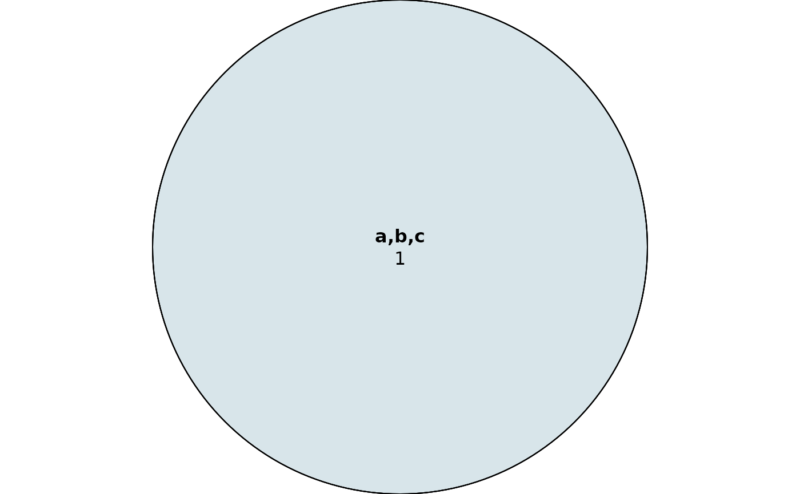

Plot a Euler diagram with intersections between GRanges objects
plot_euler.RdFurther parameters can be passed to the plot function (see plot.euler)
Arguments
- grlist
List of GRanges objects
- names
Names to give the sets
- ignore.strand
Whether to ignore strand for intersections
- fills
Color fills for each set. Eulerr interpolates the intersections
- shape
Which shape to use, either circle or ellipse. Circle is the default, but ellipse is more likely to be accurate for a difficult fit.
Examples
gr_1 <- GenomicRanges::GRanges(seqnames = c("chr1"), IRanges::IRanges(10, 20), strand = "-")
gr_2 <- GenomicRanges::GRanges(seqnames = c("chr1"), IRanges::IRanges(15, 25), strand = "+")
gr_3 <- GenomicRanges::GRanges(seqnames = c("chr1"), IRanges::IRanges(16, 18), strand = "+")
plot_euler(list(gr_1, gr_2, gr_3), names = c("a", "b", "c"))
